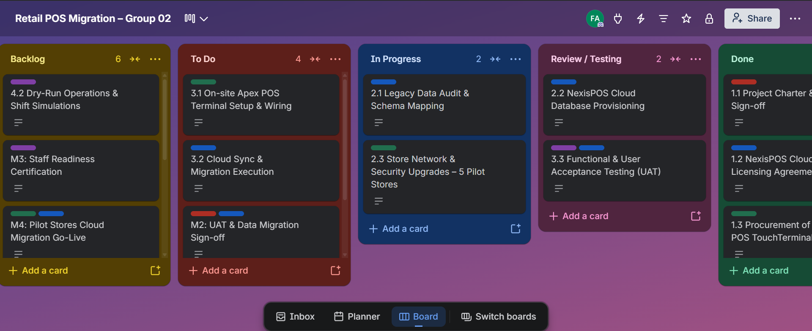
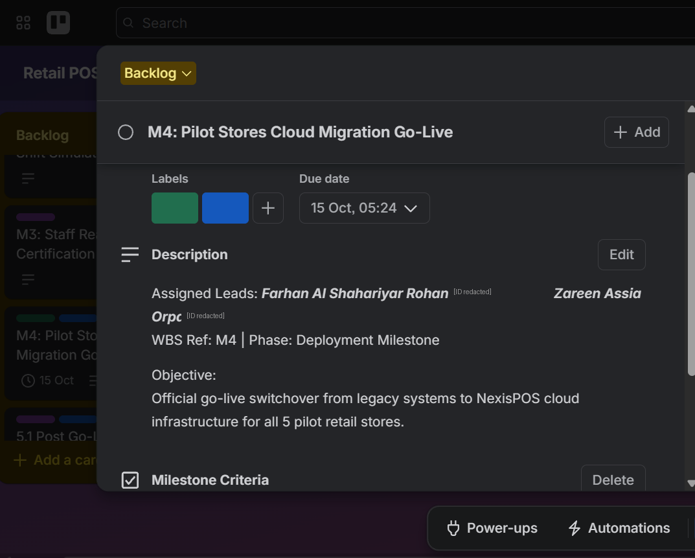

Group 02 – BISY2004 Project Management, Assessment 2
| Requirement | Target | How it was measured | Result |
|---|---|---|---|
| System availability | 99.9% uptime | NexisPOS server logs across the hypercare window (WP 5.1) | Met |
| Checkout transaction speed | Under 2 seconds | Timed transactions during user acceptance testing (WP 3.3) | Met |
| Data integrity | 100% record match, zero loss | Dual-audit reconciliation before and after cutover (WP 2.1, 3.2) | Met |
| User acceptance | All test cases passed | UAT results signed off at milestone M2 | Met |
| Staff readiness | All pilot-store cashiers certified | Certification at milestone M3, after dry-runs (WP 4.2) | Met |
Each metric answers one of the failures that justified the project in the first place. Uptime and transaction speed address the slow, unreliable legacy terminals; data integrity addresses the overnight syncing failures; staff certification addresses the operational risk of switching platform during a trading period. Every metric is verified by a specific work package, so none of them rests on an opinion at the end of the project.
| CR | Request | Raised by | Impact assessment | Decision |
|---|---|---|---|---|
| CR-01 | Substitute an alternative Apex terminal model for 3 of the 15 units after a supply shortfall | Apex supplier | Equivalent specification, no change to the CAT-01 total and no movement of M1, but the receipt printer driver must be re-tested in UAT | Approved |
| CR-02 | Add LTE backup gateways at two stores after latency appeared on cloud sync | Zareen Orpa | Funded from the CAT-05 contingency. No schedule impact, as installation runs alongside training. Directly reduces exposure to risk R1 | Approved |
| CR-03 | Extend hypercare support from two weeks to four weeks | Retail Operations Manager | Adds duration to WP 5.1, which sits on the zero-float critical path, so it moves closure past 25 September. Cost also falls outside the CAT-04 allocation | Deferred |
The decision rule can be read straight off the table. CR-01 and CR-02 were approved because neither added duration to a critical activity and both stayed inside the approved budget. CR-03 was refused for the opposite reason: extending hypercare would have moved the closure milestone on a path with no float to absorb it. It was written into the enterprise rollout proposal rather than quietly absorbed, which is the practical difference between change control and scope creep.

| List | What it holds | Exit condition |
|---|---|---|
| Backlog | Work not yet released, deferred change requests, upcoming milestones | Scheduled and assigned to an owner |
| To Do | Work released for the current phase | Owner starts the task |
| In Progress | Configuration, wiring and database scripting under way | Work complete and ready to check |
| Review / Testing | Stability checks, speed checks, hardware connectivity, UAT execution | Acceptance criteria met, or returned to In Progress |
| Done | Accepted deliverables and signed-off milestones | – |

Card titles reuse the WBS identifiers, so “3.1 On-site Apex POS Terminal Setup & Wiring” on the board is the same activity as task 3.1 in the ProjectLibre schedule and row 3.1 of the WBS register. A card without a scheduled parent activity does not get created, which is how informal work is kept out of the project.
Review / Testing exists as a separate list on purpose. Without it, a card moves from In Progress straight to Done on the word of the person who did the work. With it, a defect found during UAT sends the card backwards rather than closing it – which is exactly what happened to the receipt printer issue recorded as ISS-01 on the issue log. Milestone cards carry a further condition: M2 could not close until both the Cloud Specialist and the Project Manager had signed off.